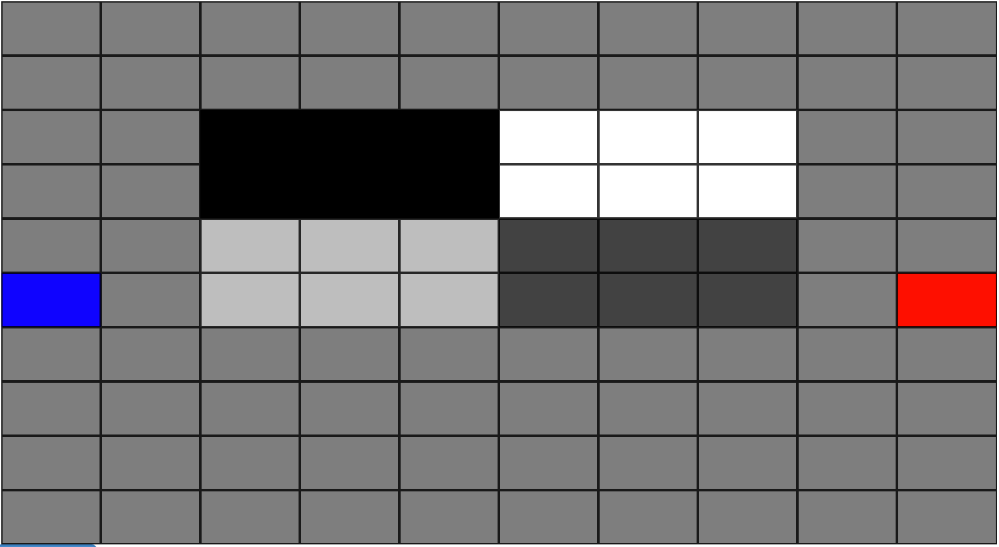

You want to get a high score before getting to the goal.
The goal is the red square.
Walking on white gives +1, light gray gives +0.5, dark gray gives -0.5, and black gives -1 points.
The value of each color will be shown; some grids will have different values for each color.
